2. ЭНЕРГЕТИЧЕСКИЕ ХАРАКТЕРИСТИКИ ЛИНЕЙНОЙ ЦЕПИ С ПЕРИОДИЧЕСКОЙ НЕСИНУСОИДАЛЬНОЙ ЭДС
При расчёте энергетических характеристик цепи с периодической несинусоидальной ЭДС используют следующие величины: действующие значения тока I, напряжения U и ЭДС Е; активную (среднюю) мощность Р; реактивную Q и полную S мощности; мощность Т искажений; коэффициенты искажений kиск, несинусоидальности kнс и др.
Действующий периодический несинусоидальный ток (по определению - это его среднее квадратичное значение за период T)
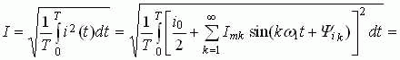
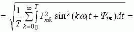 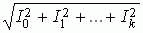
равен корню квадратному из суммы квадратов действующих значений всех гармоник тока, включая квадрат его постоянной составляющей.
Запишем по аналогии выражения действующих периодических несинусоидальных напряжения и ЭДС:
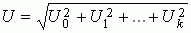 и 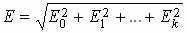.
Активная мощность цепи определяется как её среднее значение за период и равна сумме активных мощностей всех гармоник составляющих тока I и напряжения U на её входе, включая и нулевую (постоянную) составляющую ряда Фурье, т. е.
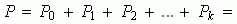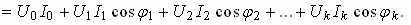
Это соотношение называют равенством Парсеваля.
По аналогии c выражением активной мощности запишем выражения реактивной и полной мощностей цепи при периодическом несинусоидальном токе I и напряжении U на её входе:
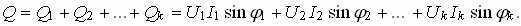
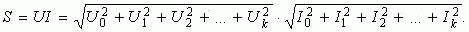
Известно, что в цепях синусоидального тока квадрат полной мощности равен сумме квадратов активной и реактивной мощностей, т. е. 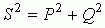. Однако, в цепях с несинусоидальной ЭДС квадрат полной мощности б(льше суммы квадратов активной и реактивной мощностей:
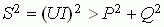.
Степень различия в формах кривых напряжения и тока характеризуется величиной
T = 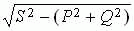,
носящей название мощность искажения.
Коэффициент искажения характеризует отклонение формы тока от формы напряжения и равен отношению мощности искажений Т к полной мощности S, т. е.
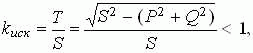
Коэффициент несинусоидальности равен отношению действующего значения тока I1(1) (напряжения U(1), ЭДС E(1)) основной (первой) гармоники к действующему значению периодического несинусоидального тока I1 (напряжения U, ЭДС Е), т. е.
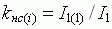 (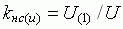 , 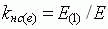)
Для гармонической функции 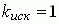.